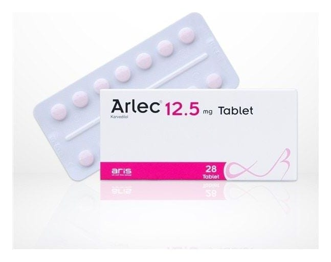

Arlec 12.5 mg Tablet, 28 Adet

Ne için kullanılır
KT · Bölüm 1ARLEC®, karvedilol adı verilen bir etkin madde içerir. Bu, “beta-blokerler” adı verilen bir gruba dahildir. ARLEC®aşağıdaki durumların tedavisinde kullanılır:
Yüksek kan basıncı (hipertansiyon) Anjina (kalbiniz yeterince oksijen almadığı zaman oluşan göğüs ağrısı veya rahatsızlık) Kronik kalp yetmezliği
Doktorunuz ARLEC®dışında durumunuzu tedavi etmek için başka ilaçlar da verebilir.
Sayfa 2 | 8